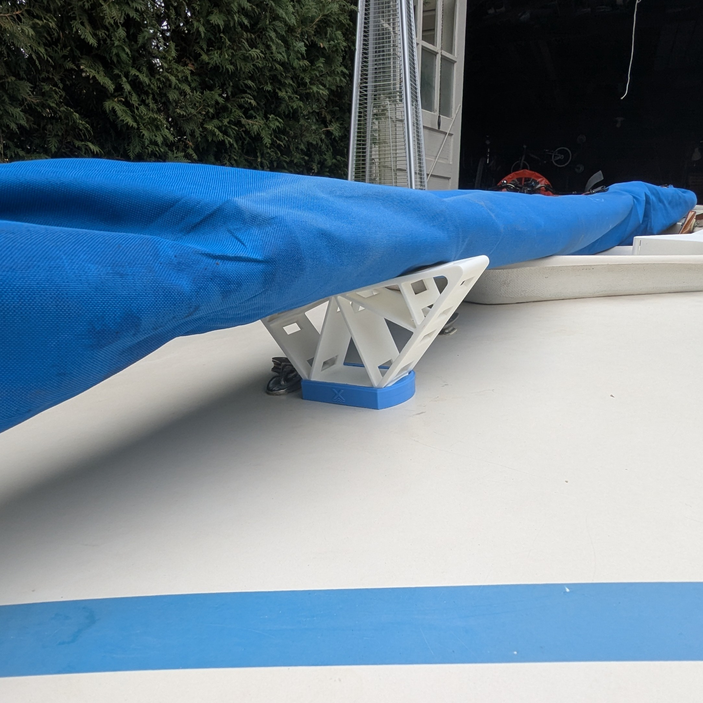

Purpose-Built Transport and Rigging Utility
The MarinerX Spar Mount system provides a stable and padded cradle for your spars during transport or storage. Designed to fit into the mast step (hole), this mount provides a convenient and secure way to hold your sail and spars while trailering or storing your boat.


Key Benefits
- Slides into the mast step (mast hole)
- Padded cradle protects the mast base and surrounding deck
- Securely holds sail-wrapped spars while trailering
- Modular design allows for optional attachments
Designed for Sunfish and other small sailboats with 2" diameter mast.
Buy on eBay